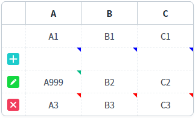
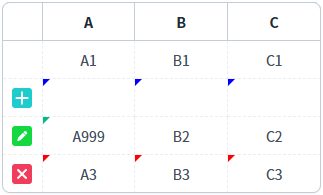
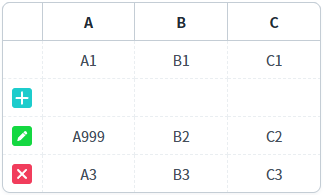

GridView의 'cellStatusVisible' 속성을 사용하여 상태 아이콘이 셀 단위로 표시되도록 설정한 예제입니다.
셀 단위 상태를 우측 상단에 표시하기
셀 단위 상태를 좌측 상단에 표시하기
셀 단위 상태 표시하지 않기
예제 영역 '셀 단위 상태를 우측 상단에 표시하기'에 구성된 GridView에서 테스트합니다.1
STEP 1: 초기 상태를 확인합니다.
GridView에 연결된 DataList 셀의 상태별 아이콘을 확인하기 위해 화면 로딩 후 스크립트(행 추가, 행 삭제, 값 변경)가 작성되었습니다. 데이터의 상태를 식별하기 위해 행 단위 상태 표기 기능이 사용되었습니다.
(행 단위별 상태) - 1번째 : 변경 상태 없음 - 2번째 : 행 추가 상태 - 3번째: 'A' 컬럼의 값이 변경된 상태 - 4번째 : 행 삭제 상태
2
STEP 2: 실행된 결과를 확인합니다.
셀에 상태 아이콘이 우측 상단에 표시됩니다.
Image 1.브라우저(Chrome) 실행 예시

예제 영역 '셀 단위 상태를 좌측 상단에 표시하기'에 구성된 GridView에서 테스트합니다.1
STEP 1: 초기 상태를 확인합니다.
GridView에 연결된 DataList 셀의 상태별 아이콘을 확인하기 위해 화면 로딩 후 스크립트(행 추가, 행 삭제, 값 변경)가 작성되었습니다. 데이터의 상태를 식별하기 위해 행 단위 상태 표기 기능이 사용되었습니다.
(행 단위별 상태) - 1번째 : 변경 상태 없음 - 2번째 : 행 추가 상태 - 3번째: 'A' 컬럼의 값이 변경된 상태 - 4번째 : 행 삭제 상태
2
STEP 2: 실행된 결과를 확인합니다.
셀에 상태 아이콘이 좌측 상단에 표시됩니다.
Image 2.브라우저(Chrome) 실행 예시

예제 영역 '(기본 설정) 셀 단위 상태 미표시'에 구성된 GridView에서 테스트합니다.1
STEP 1: 초기 상태를 확인합니다.
GridView에 연결된 DataList 셀의 상태별 아이콘을 확인하기 위해 화면 로딩 후 스크립트(행 추가, 행 삭제, 값 변경)가 작성되었습니다. 데이터의 상태를 식별하기 위해 행 단위 상태 표기 기능이 사용되었습니다.
(행 단위별 상태) - 1번째 : 변경 상태 없음 - 2번째 : 행 추가 상태 - 3번째: 'A' 컬럼의 값이 변경된 상태 - 4번째 : 행 삭제 상태
2
STEP 2: 실행된 결과를 확인합니다.
셀에 상태가 표시되지 않습니다.
Image 3.브라우저(Chrome) 실행 예시

1
STEP 1: GridView의 속성을 정의합니다.
[필수] cellStatusVisible="true"
셀에 상태 아이콘을 표시합니다.
(옵션 설명)
- false : [default] 셀의 상태(추가/수정/삭제)를 좌측 또는 우측 상단에 아이콘으로 표시합니다.
- true : 셀의 상태(추가/수정/삭제)를 표시하지 않습니다.
[선택] cellStatusIconPosition="right"
셀에 상태 아이콘을 오른쪽에 표시합니다.
(옵션 설명)
- left : 셀의 상태 아이콘을 좌측 상단에 표시합니다.
- right : [default] 셀의 상태 아이콘을 우측 상단에 표시합니다.
cellStatusVisible
cellStatusIconPosition